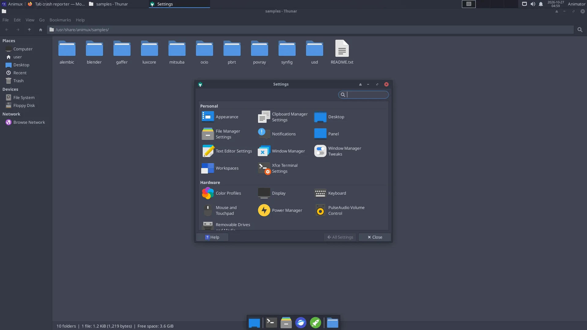
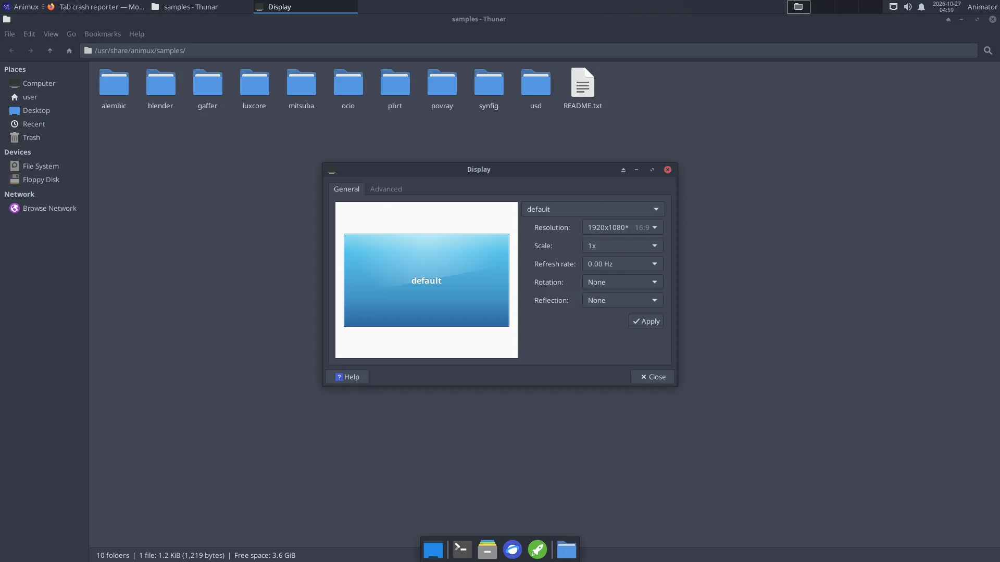

All settings are in Animux → Settings → Settings Manager.


Screen resolution and several monitors#
Settings → Display. Choose the Resolution and click Apply; keep it if the picture is good (otherwise it returns after a few seconds). With two monitors, drag them into the right positions and choose which one is the Primary Display.


Only a few resolutions in a VM or on a new graphics card?
The normal start entry uses a simple, safe graphics mode on BIOS computers. Start with Workstation (KMS / no nomodeset) in the boot menu to use the graphics card's own driver, which offers every resolution. An installed system uses the card's driver automatically.
Colour accuracy (for painting and grading): calibrate with a colorimeter and DisplayCAL (2D Graphics → Ancillary Tools).
Keyboard layout#
Settings → Keyboard → Layout: untick Use system defaults, click + Add and choose your layout. Several layouts can be switched with the key combination chosen there.
Mouse, touchpad and drawing tablet#
Settings → Mouse and Touchpad: speed, left-handed buttons, tap-to-click. A three-button mouse is strongly recommended for Blender. On a laptop, tick Emulate 3 Button Mouse in Blender's preferences.
Drawing tablets work with pressure in Krita, GIMP, MyPaint and Blender. Set the pressure curve inside each program (Krita: Settings → Configure Krita → Tablet settings).
Sound#
The speaker icon in the panel changes the volume. Sound Engineering → Sound Server Configuration → PulseAudio Volume Control chooses which output (speakers, HDMI, headphones) and input (microphone) are used, per program. Audio for recording is explained in Sound and music.
Language, time and region#
- Time zone: right-click the clock → Properties, or on an installed system run
sudo dpkg-reconfigure tzdata. - Language of the menus: on an installed system run
sudo dpkg-reconfigure locales, choose your language (for examplede_DE.UTF-8), then log out and in.
Network and Wi-Fi#
Click the network icon at the top right, choose the Wi-Fi network and type its password. Edit Connections there for fixed addresses (useful for render farm computers).
Printers and scanners#
Settings → Print Settings adds printers (most network printers are found automatically). Scanners work with Simple Scan (Graphics → Document Scanner).
Power, screen saver and lock#
Settings → Power Manager: when the screen turns off and when the computer sleeps. Tip for long renders: set Put to sleep when inactive to Never on the System tab, otherwise the computer may sleep in the middle of a render.
Appearance#
Settings → Appearance (theme, icons, fonts) and right-click the desktop → Desktop Settings for the wallpaper. Animux comes with its own wallpapers in /usr/share/backgrounds/animux.